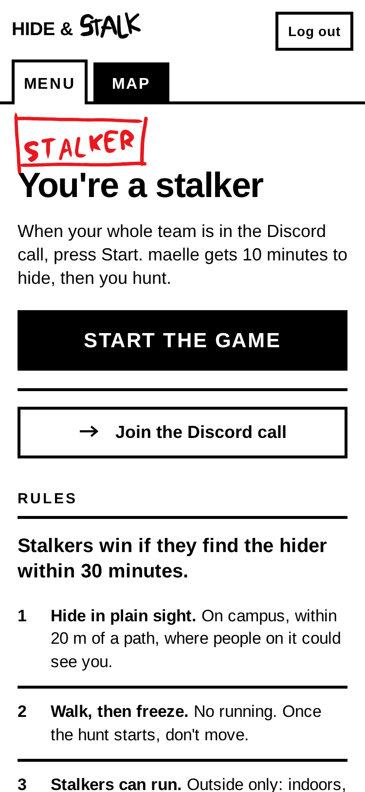
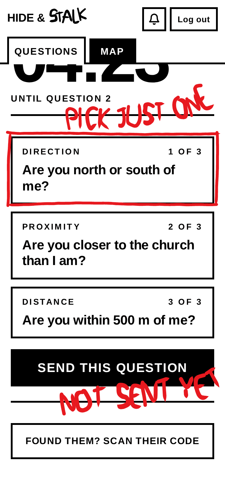
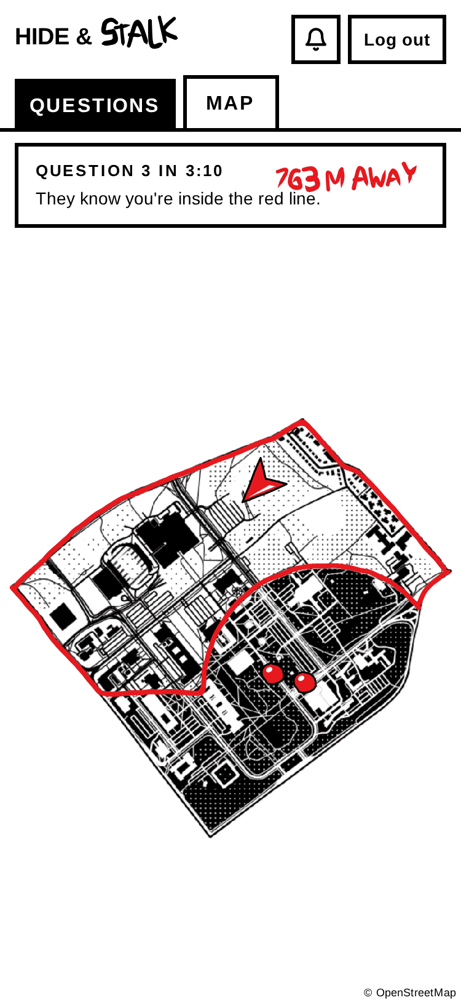
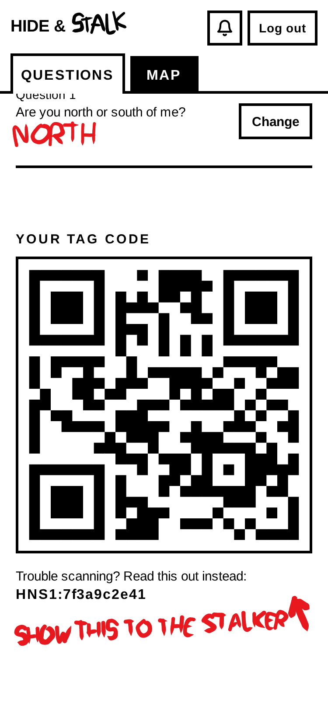
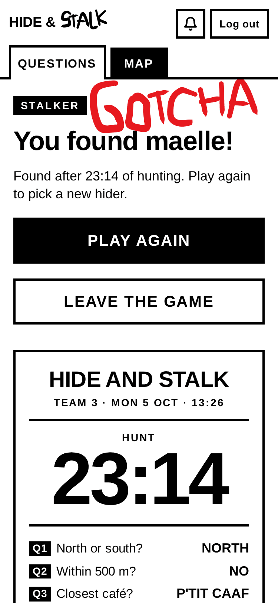
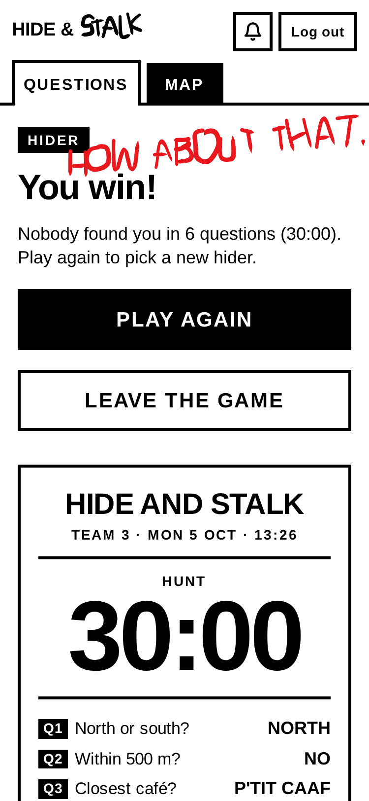

How to play
The goal is simple: hide for 30 minutes without being found.
One player hides somewhere on campus. The others, the stalkers, find them by asking questions on the app, and the hider has to answer truthfully.
- One round
- 40 min max 10 to hide, 30 to find. Found sooner, done sooner.
- Stay
- One round is enough Play one and go. Stay for more and everyone gets a turn to hide.
- Bring
- A charged phone Location on, nothing to install. Earbuds, for your team's Discord call.
- When
- Mon Oct 5, 1 PM On the Grand Axe. Teams are made on the spot.
In the sign-up channel, write “Je serai là”.
One round, tap by tap
The real app, ten screens. Tap where you would on your phone, or use Next.
-
Stalker's phone1 / 10
Teams of about 4 are made on the spot, and the app picks one hider. Everyone in the team's call? Tap Start.

-
Hider's phone2 / 10
The hider has 10 minutes to walk to a spot on campus, in plain sight. The stalkers wait.
-
Stalker's phone3 / 10
Then the hunt. Every 5 minutes the stalkers get three questions, and pick one. Tap the first.

-
Stalker's phone4 / 10
Nothing goes out until it's sent. Tap Send.

-
Hider's phone5 / 10
From now on the hider can't move, and answers right away, truthfully. Tap Send answer.

-
Hider's map6 / 10
Each answer rules out part of campus. Two answers in, the hider is somewhere inside the red line, and everyone sees it.

-
Stalker's phone7 / 10
The questions get sharper as the hunt goes on: which café, what floor, a photo of the nearest door…
-
Hider's phone8 / 10
Found? The hider shows their code…

-
Stalker's phone9 / 10
…a stalker scans it, and the stalkers win the round.

-
Hider's phone10 / 10
Nobody found them in 30 minutes? The hider wins. Then Play again with someone else hiding, or Leave the game.

The rules
Eight, most important first, as the app shows them. Tap one for the fine print.
Stalkers win if they find the hider within 30 minutes.
-
Hide in plain sight. On campus, within 20 m of a path, where people on it could see you.
- While you hide, the red line on your map is the edge of campus. Past it is out: Place Sainte-Foy, Place Laurier, the streets across the boulevards.
- A path is anywhere people walk: a sidewalk, a trail, a plaza, a parking lot, a hallway, an atrium.
- In plain sight: someone walking along that path would see you at some point. Sit, stand, blend into a crowd. Not inside, under or behind anything that hides you: a bush, a closed door, a stall, a coat over your head.
- Public places only: anywhere you can walk into without a key, a card or a ticket. Not classrooms, offices, labs, washrooms, residences, rooftops or construction sites. A locked building is not public.
- Cafés, cafeterias and atriums are fine.
-
Walk, then freeze. No running. Once the hunt starts, don't move.
- You have 10 minutes to walk to your spot. No running, no bike, scooter, bus or car.
- You can change your mind while the 10 minutes last.
- From question 1 to the end of the round, stay put. Sitting down, standing up or turning around is fine; anything that could change an answer is not.
- Not at your spot when the hunt starts? Where you are is your spot.
- Need to leave your spot (cold, washroom, anything)? Say so in the call: an organizer can pause your team.
-
Stalkers can run. Outside only: indoors, everyone walks.
- Split up or stick together, your call. “North or south of me?” and every “…than me?” question are about whoever sends it.
- Indoors, walk and keep it down: people are working.
- While the hider hides, wait where the round started and don't watch where they go.
- The app is your only way to find the hider: no Snap Map, no Find My, no asking their friends.
-
Nothing underground. No tunnels, no basements, for anyone.
- GPS doesn't work underground, and the app runs on it: the stalkers' positions draw the questions on the map, and the hider's give the coordinates and the heatmap.
- That means the tunnels between pavilions, basement floors and underground parking.
- Stalkers too: no shortcuts through the tunnels.
- Not sure if it counts? Go up a floor.
-
Touch nothing. Don't open, move or climb anything.
- Public doors you walk through are fine: building entrances, hallway doors.
- Not fine: getting inside or behind anything you have to open (a closet, a locker, a cabinet, a room's door), moving anything to hide (chairs, bins, signs), climbing anything (trees, walls, railings, roofs).
-
Answer truthfully. Right away, from where you are.
- Answer as soon as the question comes in: about a minute, two for a photo. Stalling is cheating.
- Not sure? Give your honest best answer. Got one wrong? Fix it with Change, right away.
- “North or south of me?”, “Within 200 m of me?”, “Closer to … than I am?”: go by the line, the circle or the place drawn on your map. It's drawn from where the stalker was when they sent the question.
- “Which … are you closest to?”: as the crow flies, from where you really are. The app lists the options nearest first.
- Inside means inside a building's walls. A covered walkway or a bus shelter is outside.
- Photos: taken now, from your spot. Frame them to give away as little as you can, but what the question asks for has to be in the picture. Nothing like it around? Answer N/A.
-
Found? Show your code. Stalkers win.
- A stalker has to come up to you and scan the code on your phone (it's on your QUESTIONS tab). Seeing you from far away doesn't count.
- Spotted? Don't run, and don't hide your screen.
- The scan won't work? The stalker presses “Hider has been found”, inside the scanner.
- Spotted another team's hider? Walk on and say nothing. Their code won't work for you anyway.
- 30 minutes of hunting and nobody has scanned you: you win.
-
Discord call. Stay in it all game. Hider: on mute.
- Each team has its own voice channel. Everyone joins it before pressing Start.
- The hider listens, on mute: you'll hear them coming, they won't hear a thing.
- Earbuds help. So does a charged phone.
Questions people ask
-
Can I leave after one round?
Yes. When the round ends, tap Leave the game. It takes you off your team, so the app won't pick you to hide next.
-
Do I need to know Jet Lag: The Game?
No. If you do: this is its Hide + Seek on one campus, on foot. No cards, no curses. The hider freezes, so the whole game is the endgame.
-
Can I hide inside?
Yes, in public areas: hallways, atriums, cafés. Not in classrooms, offices or washrooms, and nothing underground.
-
What kind of questions?
41 of them, made for this campus. North or south of me? Within 500 m of me? Which café are you closest to? What floor are you on? A photo of the nearest door. Each round deals three at a time; the stalkers send one.
-
Can't the stalkers just see the hider on the map?
No. The stalkers see each other, never the hider: all they get are the answers. The hider sees the stalkers coming.
-
Who wins?
Each round: the stalkers if they scan the hider's code within 30 minutes, the hider otherwise. Over the day: the longest hide.
Monday, October 5 · 1 PM · Grand Axe
Sign up on DiscordInspired by Jet Lag: The Game's Hide + Seek.